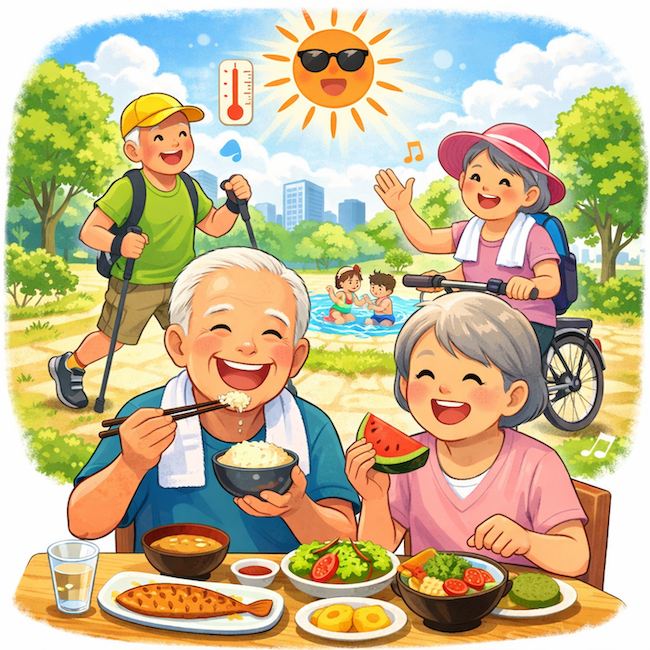

公開日：2026年6月｜最終更新：2026年7月
一般に、体温は36～37℃の範囲に保たれています。
しかし、年齢を重ねると平均体温が少し低くなる傾向があることが知られています。
第１章 「高齢者の平熱は少し低くなる」理由
その理由として、いくつかの生理的変化が考えられています。
(1) 筋肉量の減少
筋肉は体内で熱を作る大切な組織です。
加齢により筋肉量が減少すると、体内で作られる熱も少なくなります。
(2) 代謝の低下
体のエネルギー代謝は加齢とともに低下します。
その結果、体内で生じる熱の量も減少します。
(3) 体温調節機能の変化
脳の体温調節機構や皮膚の血流調節が変化し、体温の変化がゆるやかになります。
コラム：皮膚のセンサーも変化する
加齢により、「皮膚の温度を感じるセンサー」の働きも低下します。
そのため、寒さや暑さに気づきにくくなり、体温調節が遅れることがあります。
第２章 健康管理で大切なこと
高齢者では平熱がやや低めになることがあるため、
「37℃未満だから発熱ではない」とは言い切れない場合があります。
- 35℃台 → 36℃台に上がる
- いつもの体温より1℃程度上昇
このような変化が、体調のサインになることがあります。
高齢者では、一般的な体温の基準が準用できないこともあるので、
普段の体温を知っておくことが重要です。
第３章 平熱を保つための食生活
体温を上げるというより、「体温を維持する生活」が重要です。
体温低下の最大の原因は、「筋肉量の減少」です。
(1) たんぱく質
魚・肉・卵・大豆製品などをしっかり摂取することが大切です。
目安：1.0～1.2g／体重kg／日
(2) エネルギー不足を防ぐ
低栄養になると代謝が低下し、体温も下がります。
やせすぎには注意が必要です。
(3) 温かい食事
体を温める食事は、体温維持に役立ちます。

コラム：感覚を保つための簡単な習慣
皮膚の感覚を保つためには、日常的な刺激が役立ちます。
- 手足をこする・マッサージする
- ぬるめのお湯と冷水を交互に使う（無理のない範囲で）
- 軽い運動（散歩など）
こうした習慣は、血流や感覚の維持につながります。
第４章 まとめ
高齢者では平熱が低くなる可能性があるため、
若い人では問題ない体温でも、体調変化のサインである可能性があります。
普段の体温を把握し、変化に気づくことが健康管理のポイントです。
参考文献
- 厚生労働省：熱中症予防に関する資料
- 厚生労働省：健康づくりのための生活習慣指針
- 消費者庁：高齢者の事故防止（ヒートショック）
- 日本老年医学会：高齢者診療ガイドライン
- 標準生理学（医学書院）
※本ページは公的機関および学会の情報などをもとに作成しています。